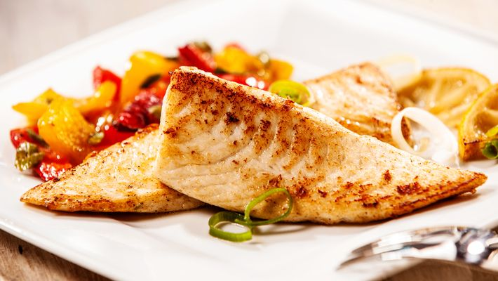

TILÁPIA GRELHADA COM LEGUMES

INGREDIENTES
2 unidades de filés de tilápia
1 unidade de cenoura
3 unidades de batata
1 cebola picada
1 colher de sopa de manteiga
1 azeite de oliva tipo único (para refogar)
1 azeite de oliva virgem (para temperar)
sal, alecrim e orégano a gosto
Ervilhas e vagem a gosto
1 limão. Opcional.
MODO DE PREPARO
- Tempere o peixe apenas com o sal e reserve (inserir limão nesta etapa, se quiser).
- Corte os legumes como preferir. Realize pré cozimento dos legumes, se desejar.
- Aqueça uma frigideira, derreta a manteiga, refogue a cebola e adicione os legumes e refogue
bem.
Reserve.
- Na mesma frigideira, adicione e doure o azeite tipo único.Fogo baixo. Após isto, grelhe os
filés.
- Para melhor resultado, adicione os legumes refogados a uma tigela contendo azeite, alecrim, sal e
orégano.
- Mexa bem.
- Adicione o azeite temperado restante ao filé grelhado.
- Sirva com os legumes.